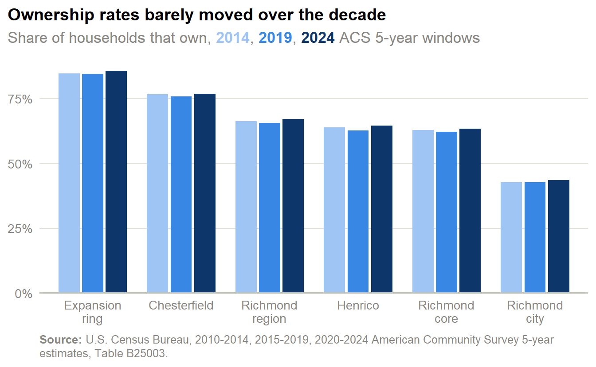
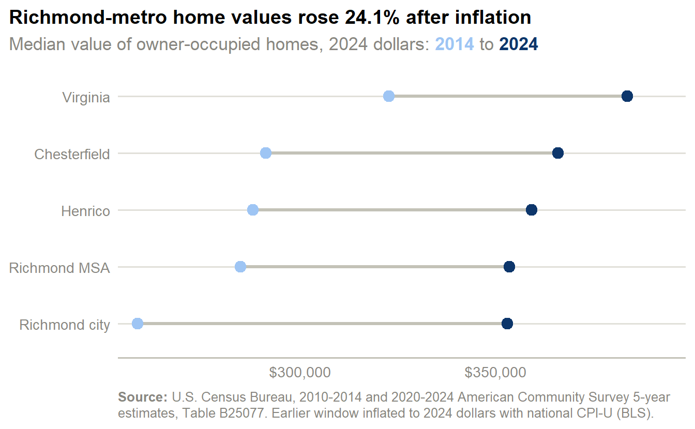
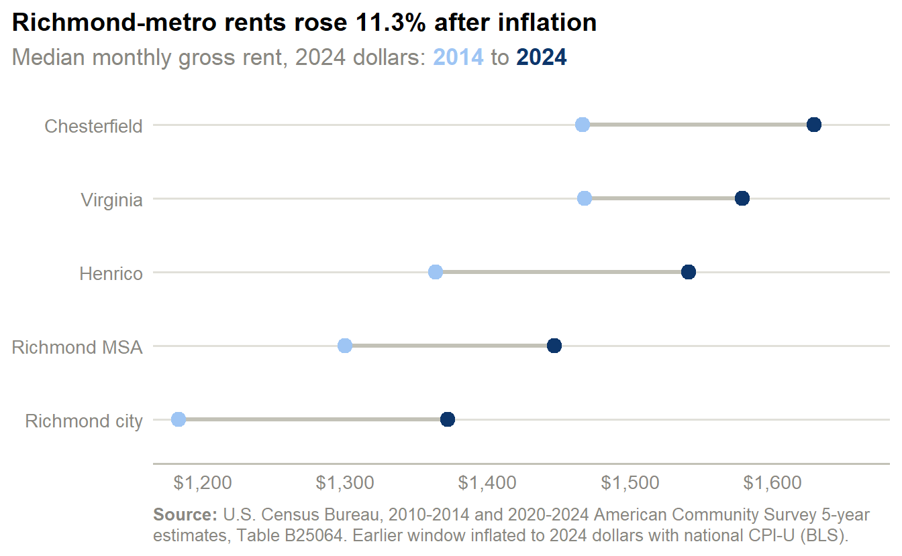
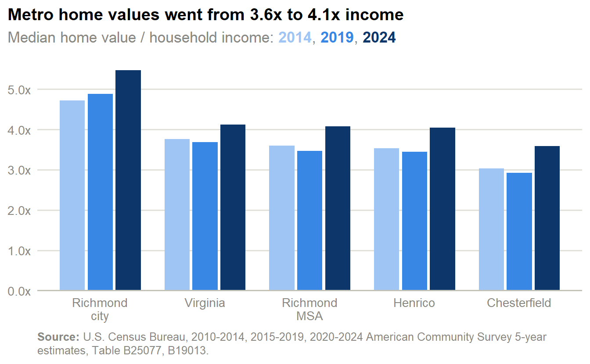
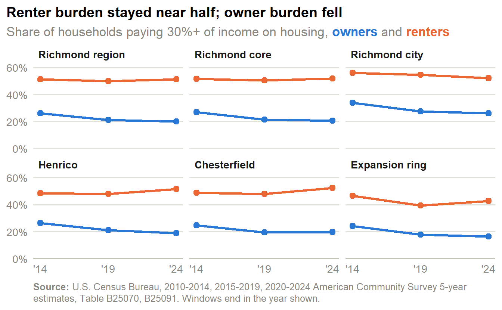
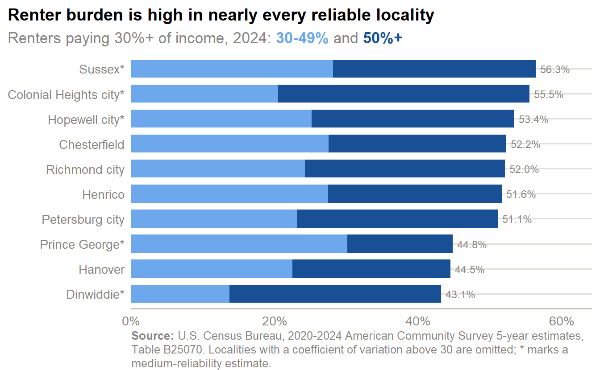

Market
Tenure, home values, rents, affordability, and cost burden for the Richmond region, from the ACS 5-year estimates. Every trend compares three non-overlapping five-year windows ending 2014, 2019, and 2024.
Ownership held near two-thirds as both tenures grew
- Across the 17-locality region, 67.0% of households own their home in the 2024 window, against 66.2% in the 2014 window.
- Richmond city is the only core locality where renters outnumber owners: 58,914 renter households to 45,407 owner households, an ownership rate of 43.5%.
- Chesterfield (76.7%) and the expansion ring (85.5%) are overwhelmingly owner markets; Henrico sits between them at 64.5%.
- Renter households grew 14.2% across the region and owner households 18.5% between the 2014 and 2024 windows.
| Geography | Owners 2014 | Owners 2024 | Renters 2014 | Renters 2024 | Renter growth |
|---|---|---|---|---|---|
| Richmond city | 36,704 | 45,407 | 49,209 | 58,914 | 19.7% |
| Henrico | 79,065 | 88,571 | 44,756 | 48,794 | 9.0% |
| Chesterfield | 88,056 | 107,538 | 26,949 | 32,617 | 21.0% |
| Richmond core | 203,825 | 241,516 | 120,914 | 140,325 | 16.1% |
| Expansion ring | 52,362 | 62,980 | 9,587 | 10,638 | 11.0% |
| Richmond region | 301,557 | 357,348 | 154,140 | 176,082 | 14.2% |
- Chesterfield added 19,482 owner households and 5,668 renter households, the largest owner gain of the three core localities.
- Richmond city added 9,705 renter households (19.7%), against 9.0% in Henrico and 21.0% in Chesterfield.
Home values and rents climbed in every core locality

- The Richmond MSA’s median home value rose 24.1% after inflation, from $284,755 to $353,500 in 2024 dollars (64.5% before adjusting).
- Among the core three, Richmond city’s real median value rose 36.6%, Henrico’s rose 24.8%, and Chesterfield’s rose 25.7%.
- The metro’s 2024 median ($353,500) compares with $383,700 statewide.

- The Richmond MSA’s median gross rent rose 11.3% in real terms, from $1,299.88 to $1,447 a month (47.5% as published).
- Richmond city’s real median rent rose 15.9%, against rose 13.0% in Henrico and rose 11.1% in Chesterfield.
- Gross rent includes utilities the renter pays, so it is not comparable to a quoted asking rent.
| Geography | Value 2014 | Value 2024 | Real change | Rent 2014 | Rent 2024 | Real change |
|---|---|---|---|---|---|---|
| Washington MSA | $373,300 | $579,900 | 17.2% | $1,479 | $2,027 | 3.4% |
| Goochland | $324,800 | $500,600 | 16.3% | $947 | $1,614 | 28.6% |
| Charlottesville MSA | $260,300 | $430,300 | 24.8% | $1,050 | $1,598 | 14.9% |
| Powhatan | $259,500 | $416,000 | 21.0% | $1,040 | $1,168 | -15.2% |
| Hanover | $257,600 | $400,400 | 17.3% | $1,049 | $1,591 | 14.5% |
| New Kent | $247,800 | $393,600 | 19.9% | $892* | $1,721 | 45.6% |
| Virginia | $243,500 | $383,700 | 18.9% | $1,108 | $1,579 | 7.5% |
| Chesterfield | $219,800 | $366,000 | 25.7% | $1,107 | $1,629 | 11.1% |
| Henrico | $217,300 | $359,200 | 24.8% | $1,029 | $1,541 | 13.0% |
| Richmond MSA | $214,900 | $353,500 | 24.1% | $981 | $1,447 | 11.3% |
| Richmond city | $195,000 | $353,000 | 36.6% | $893 | $1,372 | 15.9% |
| Hampton Roads MSA | $235,900 | $340,900 | 9.1% | $1,082 | $1,478 | 3.1% |
| Ashland town | $189,400 | $293,200 | 16.8% | $941 | $1,229 | -1.4% |
- Smaller localities carry wider margins of error on both medians; the table suppresses low-reliability cells and marks medium ones.
- The “real change” columns deflate the earlier window to 2024 dollars with the national CPI-U, so they measure change relative to national prices, not a local cost-of-living index.
Price-to-income ratios show where buying is hardest

- In the Richmond MSA the typical home was worth 4.1 times the typical household income in the 2024 window, against 3.6 times in the 2014 window.
- Among the core three, the ratio is 5.5 in Richmond city, 4.0 in Henrico, and 3.6 in Chesterfield; statewide it is 4.1.
- Annual median rent equals 25.5% of Richmond city’s median household income, 20.8% of Henrico’s, and 19.2% of Chesterfield’s.
- The ratio compares two medians, not one household’s rent and income: renters are on average lower-income than the all-household median, so a typical renter’s burden is higher than this ratio implies (see the cost-burden section below).
What these ratios do and don’t measure
Median home value is the owner’s own estimate of what their home is worth, for every owner-occupied home, not just recent sales, so the price-to-income ratio understates what it costs to enter the market today. Both ratios divide one median by another; they describe how local prices compare with local incomes, not what any particular household can afford.
Renter cost burden stayed near half while owner burden fell

- Across the region, 51.2% of renter households pay 30% or more of income on housing in the 2024 window, against 51.4% in the 2014 window — effectively unchanged. 25.7% pay half or more.
- Owner burden fell: 20.0% of owners are cost-burdened now, down from 26.1%.
- Richmond city has the highest owner burden of the core three (26.2%, down from 33.9%).
- Renter burden is nearly identical across the core: 52.0% in Richmond city, 51.6% in Henrico, and 52.2% in Chesterfield — a region-wide condition, not a city one.
- The Richmond MSA’s 51.2% renter burden compares with 48.5% statewide and 54.5% in Hampton Roads.
| Geography | Renters 2014 | Renters 2024 | Change (pts) | Owners 2014 | Owners 2024 | Change (pts) |
|---|---|---|---|---|---|---|
| Richmond region | 51.4% | 51.2% | -0.2 | 26.1% | 20.0% | -6.0 |
| Richmond core | 51.6% | 51.9% | +0.4 | 27.0% | 20.6% | -6.4 |
| Richmond city | 56.0% | 52.0% | -3.9 | 33.9% | 26.2% | -7.7 |
| Henrico | 48.4% | 51.6% | +3.2 | 26.3% | 18.8% | -7.5 |
| Chesterfield | 48.7% | 52.2% | +3.5 | 24.8% | 19.7% | -5.1 |
| Expansion ring | 46.5% | 42.6% | -3.9 | 24.1% | 16.5% | -7.6 |
- Richmond city’s renter burden moved from 56.0% to 52.0% (-3.9 points), while Henrico’s moved +3.2 points and Chesterfield’s +3.5 points.
- The expansion ring’s renter burden is the lowest of the six geographies at 42.6%, but its renter base is small (10,638 households).
- Excluded from every share: 9,537 renter and 2,706 owner households in the region with no computed burden (zero or negative income, or no cash rent).

- The 10 localities with reliable renter-burden estimates all fall between 43.1% and 56.3%.
- 7 of the 17 localities are omitted because their renter-burden estimates are too imprecise to show; they are mostly small, rural localities with few renter households.
Small-geography reliability
Renter-burden and median estimates for the expansion-ring localities and other small jurisdictions rest on small samples. Figures here use the pooled rows or the three core localities where possible; locality-level cells with a coefficient of variation above 30 are omitted (—) and medium-reliability cells are marked (*).
How cost burden is measured
A household is cost-burdened when it pays 30% or more of its income on housing and severely cost-burdened at 50% or more. For renters, housing cost is gross rent, which includes utilities; for owners it is selected monthly owner costs, which include mortgage payments, taxes, insurance, and utilities. Households with no or negative income are excluded.
What this page shows
- Tenure: about two-thirds of households own (67.0%), a share that barely moved, but Richmond city is a majority-renter locality (43.5% own).
- Values and rents: the Richmond MSA’s median home value rose 24.1% and median rent rose 11.3% after inflation.
- Affordability: the typical home was worth 4.1 times the typical household income in the metro, and median rent equalled 20.0% of it.
- Cost burden: about half of renter households (51.2%) are cost-burdened and that has not eased, while owner burden fell to 20.0%.